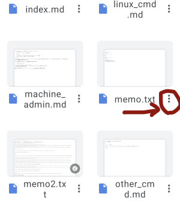
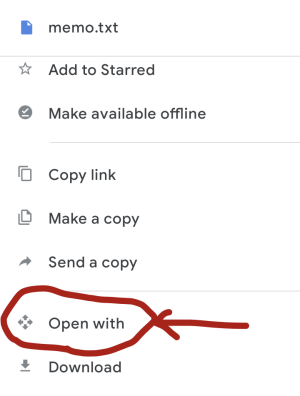
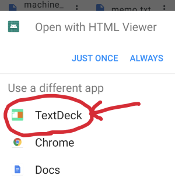

Open google drive app and choose whatever text file you want to use as memo file.
Open menu of that file.

Then, scroll down menu and choose "Open with".

Finaly, choose TextDeck (this app).

Now TextDeck save this path and use it for later launch.
If you want to change text file to store, just open that text from Google Drive app again.